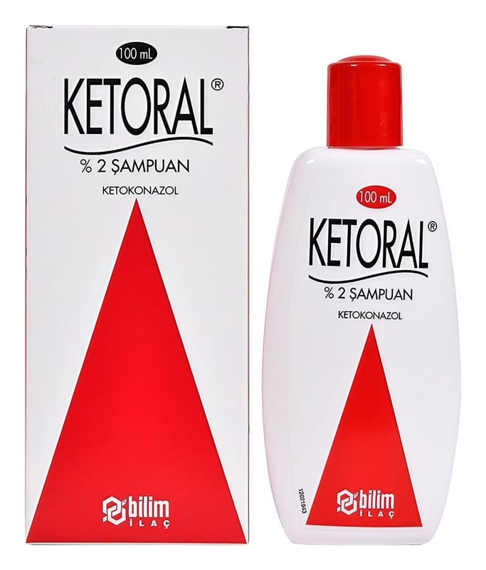

Ketoral % 2 Sampuan, 60 ml

Ne için kullanılır
KT · Bölüm 1• KETORAL, saçlı deri ve/veya deri üzerine uygulanacak şampuan formundadır. • KETORAL, 60 mL ve 100 mL şampuan içeren şişeler halinde piyasaya sunulmaktadır. • KETORAL’in etkin maddesi olan ketokonazol, imidazol türevi sistemik antimikotikler adı verilen bir ilaç grubuna aittir.
• KETORAL kafa derisi ve vücutta oluşan aşağıdaki mantar enfeksiyonlarında kullanılır:
- Kepeklenme
- “Seboreik dermatit” diye adlandırılan kafa derisindeki ve vücuttaki kuru ya da yağlı kabuklanmalar
- Güneşe maruziyetten sonra görülen “tinea versicolor” ya da “Pityriasis versicolor” denilen, vücuttaki beyaz-kahverengi lekelenmeler
• Bu durumlar kaşıntılı olabilir. “Malassezia” diye adlandırılan bir mantardan dolayı oluşurlar. Bu mantar herkesin cildinde bulunur ama bazen gereğinden fazla büyüyerek problemlere yol açabilir. KETORAL bu mantarı öldürerek ve geri dönmesini engelleyerek etki eder.